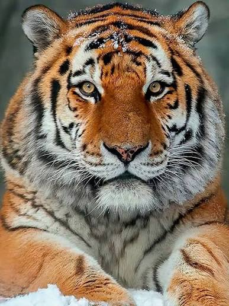
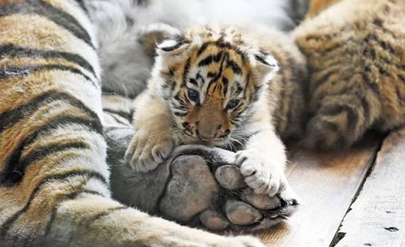
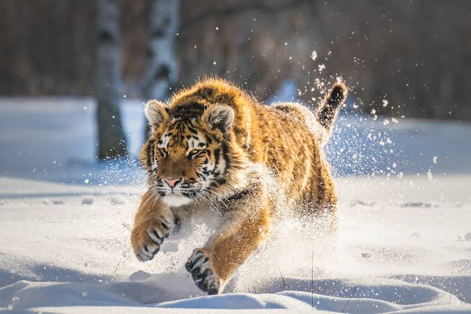

Главная страница
Амурский тигр - подробное описание
Список редких видов (таблица, график, фильтр)

Амурский тигр (лат. Panthera tigris altaica) - самый крупный подвид тигра. Он обитает на Дальнем Востоке России, в Приморском и Хабаровском краях, а также небольшими группами встречается в Китае и Северной Корее. Это один из самых редких хищников планеты: по оценкам на 2023 год, в дикой природе осталось около 600 особей.
Длина тела взрослого самца может достигать 3 метров вместе с хвостом, а масса - до 300 килограммов. Самки заметно мельче: до 2,5 метров и 160 килограммов. Мех густой и длинный, что помогает выживать при морозах до -40 °C. Основная добыча - кабан, изюбрь, пятнистый олень, иногда медведи и мелкие хищники.
Амурский тигр занесён в Красную книгу России (категория 1 - находящиеся под угрозой исчезновения) и в Международную Красную книгу. Охота на него запрещена с 1947 года.

К началу XX века амурских тигров истребляли ради шкур и трофеев. Кроме того, люди активно вырубали кедрово-широколиственные леса - основные места обитания тигра - и сокращали численность копытных, которыми он питается. К 1940-м годам осталось не более 30-40 особей.
После запрета охоты и создания заповедников (Сихотэ-Алинский, Лазовский, Большехехцирский) численность начала медленно расти. Однако браконьерство и вырубка лесов остаются главными угрозами до сих пор. Дороги и нефтепроводы разрезают тайгу на части, из-за чего тигры не могут свободно перемещаться и находить пару.

Основу рациона составляют крупные копытные: кабан, изюбрь, пятнистый олень, косуля. Взрослому тигру нужно около 9-10 килограммов мяса в день, поэтому за год он добывает примерно 50-70 крупных животных. Тигр охотится в одиночку, чаще всего в сумерках или ночью, подкрадываясь к добыче и делая короткий бросок.
Если копытных мало, тигр может переключаться на медведей, барсуков, енотовидных собак, зайцев, рыбу. Известны случаи, когда тигры нападали на собак в деревнях, но это происходит редко и обычно связано с ослабленными или ранеными животными.